规定初始像素覆盖已通过独立数据验收，完整12步与物理安全未通过。Prescribed initial pixel coverage passes the independent DATA audit; full12-step and physical acceptance remain incomplete. Original1280×720; no edits/crop. Every image below is INITIAL, not micro1/final.
{"seed": 3, "proposal_id": 2072, "global_id": 32792, "family": 0}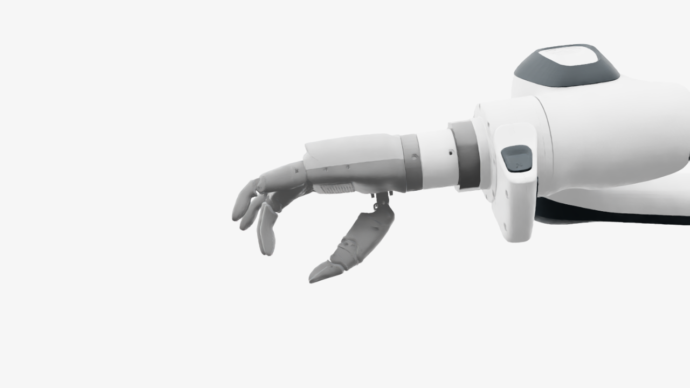
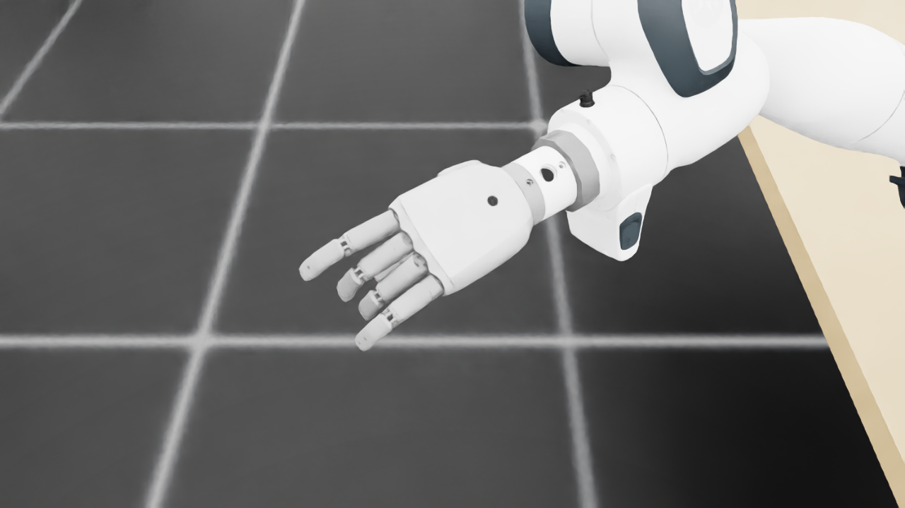
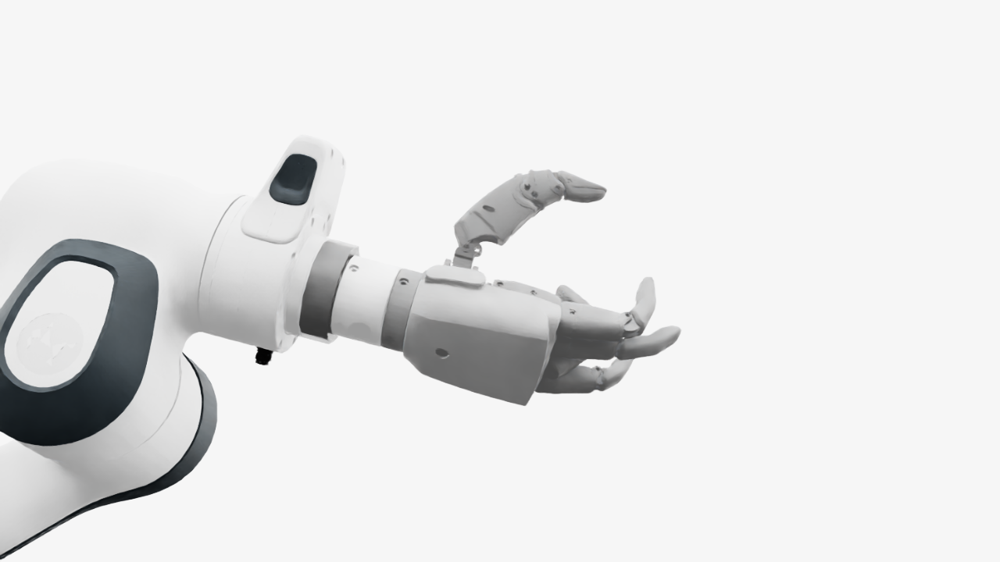
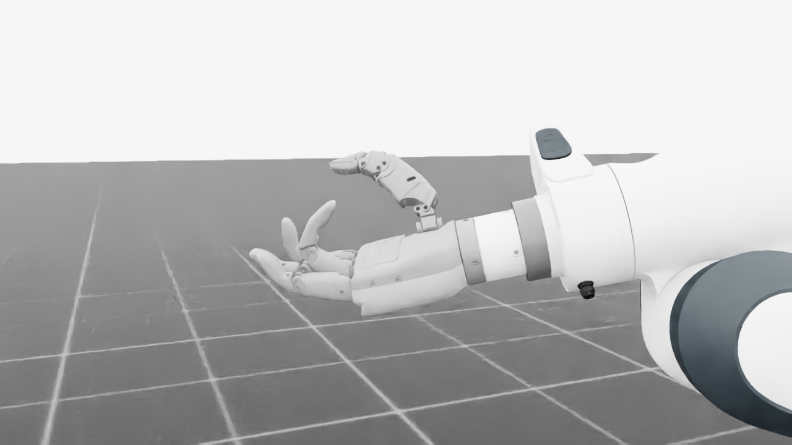
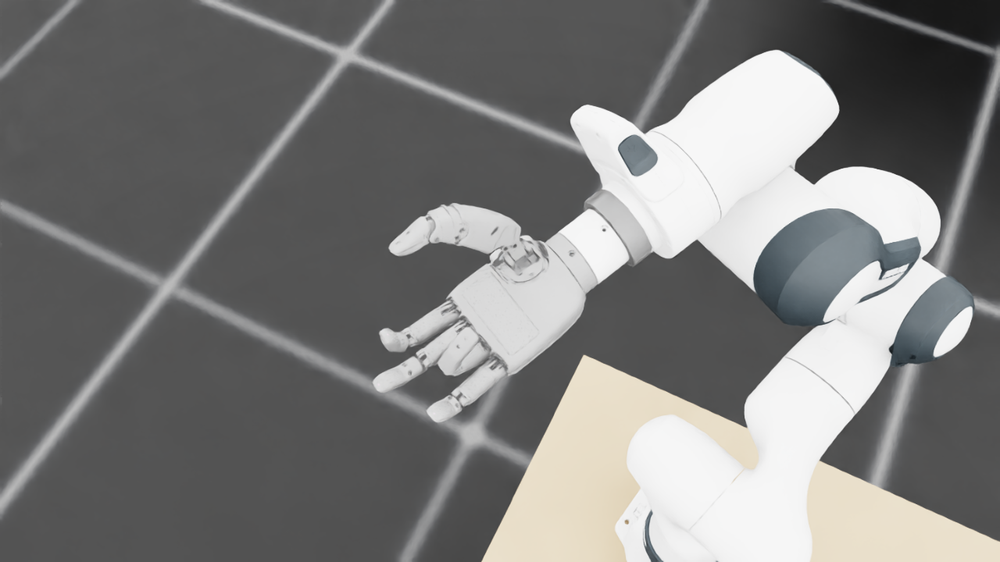
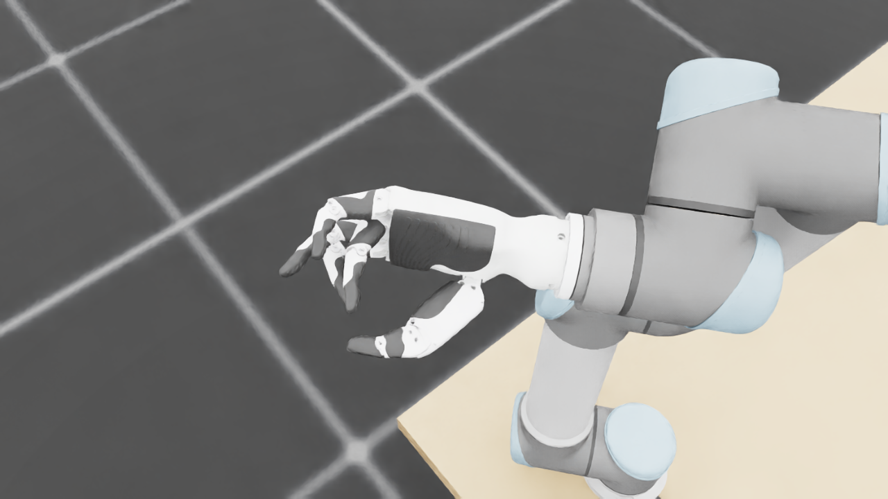
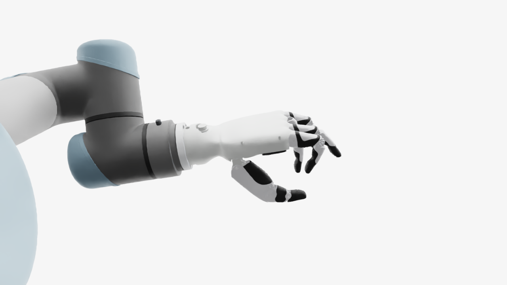
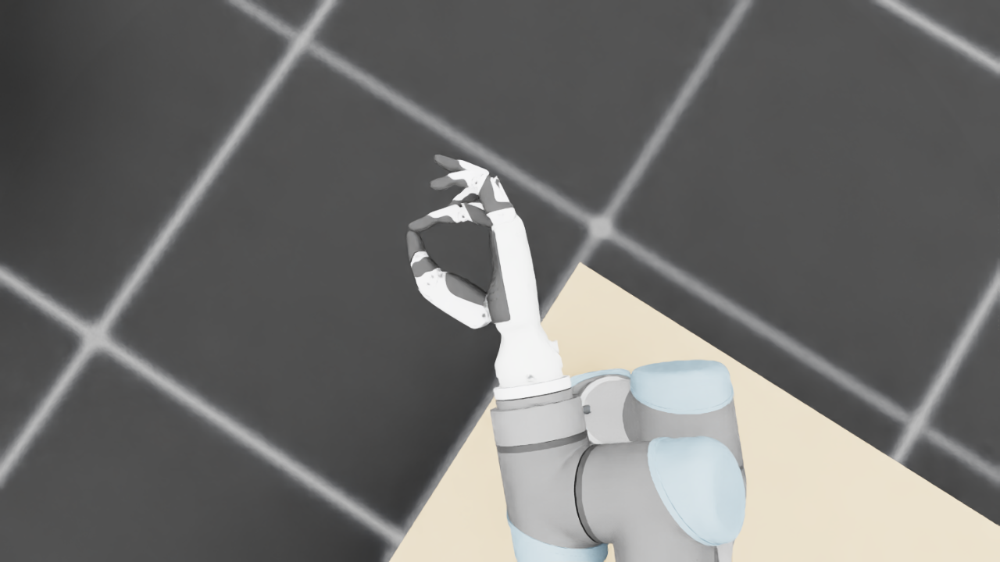
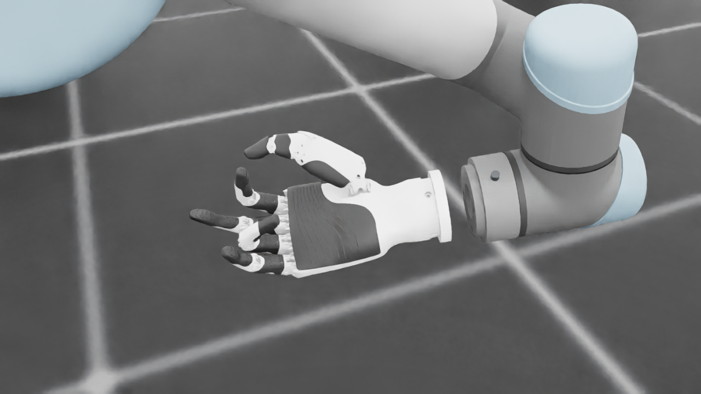
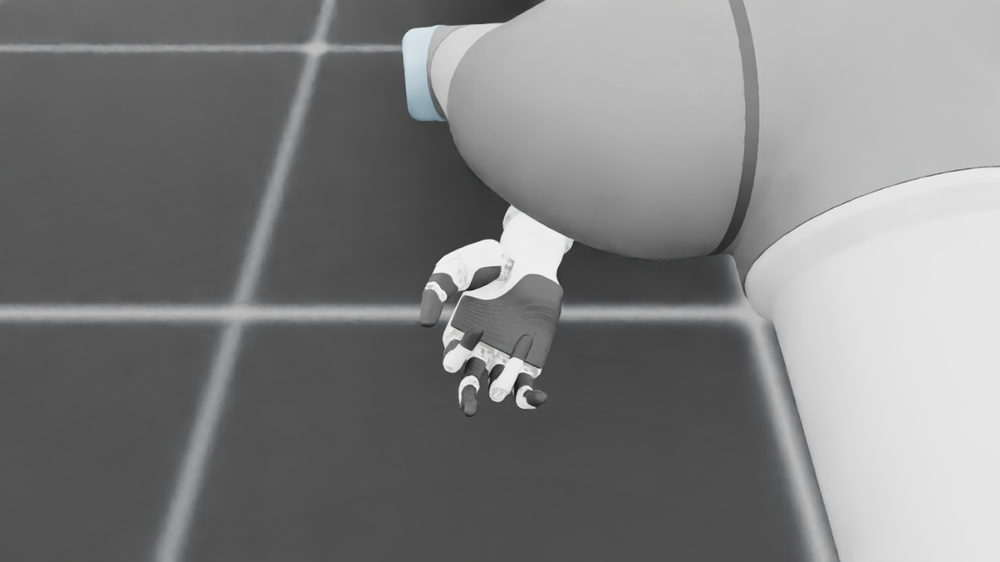
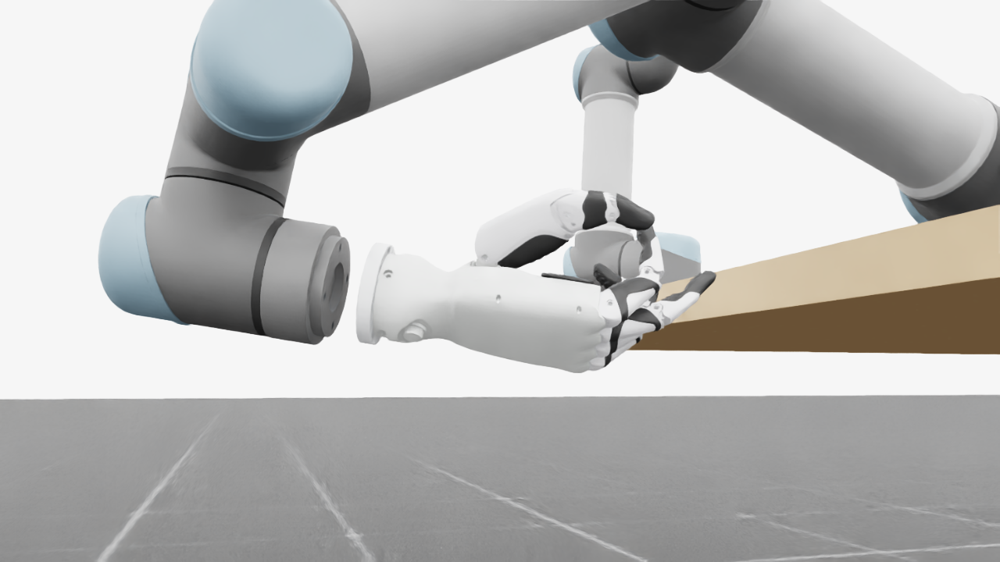
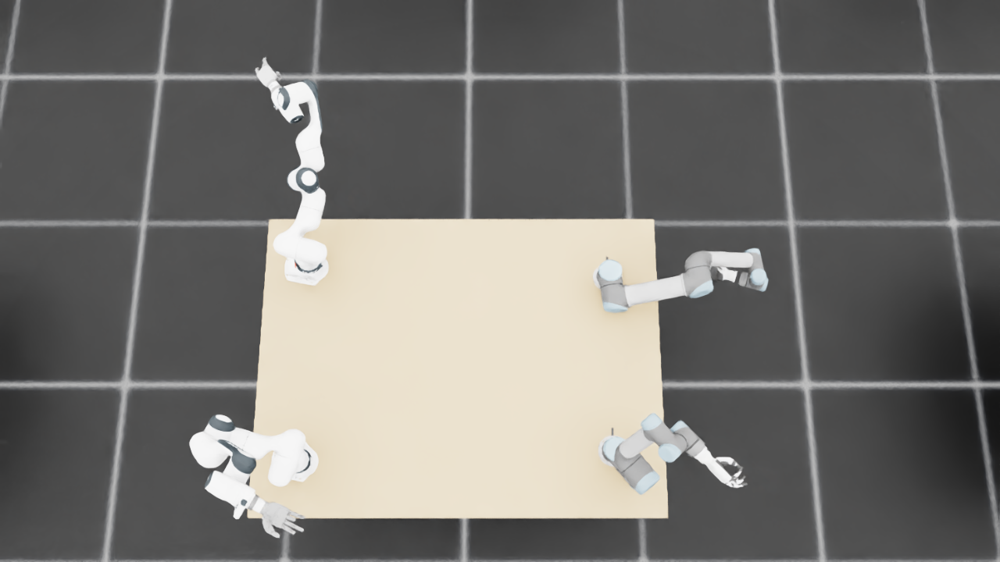
{
"qualified": true,
"arms": {
"F_L": {
"qualified": true,
"palm_visual_peak_pixels": 33425,
"finger_family_peak_pixels": {
"thumb": 9851,
"index": 6712,
"middle": 3812,
"ring": 3938,
"little": 5825
},
"per_native_body_peak_pixels": {
"/World/envs/env_24/F_L/f2_hand/left_hand_base": 41440,
"/World/envs/env_24/F_L/f2_hand/left_index_1": 4197,
"/World/envs/env_24/F_L/f2_hand/left_middle_1": 2582,
"/World/envs/env_24/F_L/f2_hand/left_pinky_1": 3765,
"/World/envs/env_24/F_L/f2_hand/left_ring_1": 2357,
"/World/envs/env_24/F_L/f2_hand/left_thumb_1": 901,
"/World/envs/env_24/F_L/f2_hand/left_index_2": 2515,
"/World/envs/env_24/F_L/f2_hand/left_middle_2": 1230,
"/World/envs/env_24/F_L/f2_hand/left_pinky_2": 2060,
"/World/envs/env_24/F_L/f2_hand/left_ring_2": 2316,
"/World/envs/env_24/F_L/f2_hand/left_thumb_2": 5721,
"/World/envs/env_24/F_L/f2_hand/left_thumb_3": 1955,
"/World/envs/env_24/F_L/f2_hand/left_thumb_4": 1764
},
"native_body_visibility_gaps": [],
"all_native_hand_bodies_observed": true,
"full_mesh_coverage_certified": false,
"all_recorded_attempt_peak": {
"qualified": false,
"palm_visual_peak_pixels": 33425,
"finger_family_peak_pixels": {
"thumb": 12085,
"index": 6712,
"middle": 4764,
"ring": 3974,
"little": 6060
},
"per_native_body_peak_pixels": {
"/World/envs/env_24/F_L/f2_hand/left_hand_base": 41440,
"/World/envs/env_24/F_L/f2_hand/left_index_1": 4197,
"/World/envs/env_24/F_L/f2_hand/left_middle_1": 2582,
"/World/envs/env_24/F_L/f2_hand/left_pinky_1": 4058,
"/World/envs/env_24/F_L/f2_hand/left_ring_1": 2357,
"/World/envs/env_24/F_L/f2_hand/left_thumb_1": 1141,
"/World/envs/env_24/F_L/f2_hand/left_index_2": 2742,
"/World/envs/env_24/F_L/f2_hand/left_middle_2": 2641,
"/World/envs/env_24/F_L/f2_hand/left_pinky_2": 2060,
"/World/envs/env_24/F_L/f2_hand/left_ring_2": 2316,
"/World/envs/env_24/F_L/f2_hand/left_thumb_2": 6419,
"/World/envs/env_24/F_L/f2_hand/left_thumb_3": 2420,
"/World/envs/env_24/F_L/f2_hand/left_thumb_4": 2145
},
"native_body_visibility_gaps": [],
"all_native_hand_bodies_observed": true,
"full_mesh_coverage_certified": false,
"qualification": false
},
"attempts": 7,
"decoded": 7
},
"F_R": {
"qualified": true,
"palm_visual_peak_pixels": 29954,
"finger_family_peak_pixels": {
"thumb": 10300,
"index": 5486,
"middle": 4273,
"ring": 4368,
"little": 5767
},
"per_native_body_peak_pixels": {
"/World/envs/env_24/F_R/f2_hand/right_hand_base": 36913,
"/World/envs/env_24/F_R/f2_hand/right_index_1": 3604,
"/World/envs/env_24/F_R/f2_hand/right_middle_1": 2087,
"/World/envs/env_24/F_R/f2_hand/right_pinky_1": 3667,
"/World/envs/env_24/F_R/f2_hand/right_ring_1": 1962,
"/World/envs/env_24/F_R/f2_hand/right_thumb_1": 992,
"/World/envs/env_24/F_R/f2_hand/right_index_2": 1882,
"/World/envs/env_24/F_R/f2_hand/right_middle_2": 2186,
"/World/envs/env_24/F_R/f2_hand/right_pinky_2": 2100,
"/World/envs/env_24/F_R/f2_hand/right_ring_2": 2406,
"/World/envs/env_24/F_R/f2_hand/right_thumb_2": 5749,
"/World/envs/env_24/F_R/f2_hand/right_thumb_3": 2020,
"/World/envs/env_24/F_R/f2_hand/right_thumb_4": 1760
},
"native_body_visibility_gaps": [],
"all_native_hand_bodies_observed": true,
"full_mesh_coverage_certified": false,
"all_recorded_attempt_peak": {
"qualified": false,
"palm_visual_peak_pixels": 30280,
"finger_family_peak_pixels": {
"thumb": 11691,
"index": 6331,
"middle": 4273,
"ring": 4833,
"little": 5767
},
"per_native_body_peak_pixels": {
"/World/envs/env_24/F_R/f2_hand/right_hand_base": 36913,
"/World/envs/env_24/F_R/f2_hand/right_index_1": 3818,
"/World/envs/env_24/F_R/f2_hand/right_middle_1": 2342,
"/World/envs/env_24/F_R/f2_hand/right_pinky_1": 3667,
"/World/envs/env_24/F_R/f2_hand/right_ring_1": 2327,
"/World/envs/env_24/F_R/f2_hand/right_thumb_1": 1040,
"/World/envs/env_24/F_R/f2_hand/right_index_2": 2513,
"/World/envs/env_24/F_R/f2_hand/right_middle_2": 2570,
"/World/envs/env_24/F_R/f2_hand/right_pinky_2": 2100,
"/World/envs/env_24/F_R/f2_hand/right_ring_2": 2506,
"/World/envs/env_24/F_R/f2_hand/right_thumb_2": 5802,
"/World/envs/env_24/F_R/f2_hand/right_thumb_3": 2559,
"/World/envs/env_24/F_R/f2_hand/right_thumb_4": 2290
},
"native_body_visibility_gaps": [],
"all_native_hand_bodies_observed": true,
"full_mesh_coverage_certified": false,
"qualification": false
},
"attempts": 6,
"decoded": 6
},
"U_L": {
"qualified": true,
"palm_visual_peak_pixels": 11216,
"finger_family_peak_pixels": {
"thumb": 10637,
"index": 4774,
"middle": 2878,
"ring": 4100,
"little": 4831
},
"per_native_body_peak_pixels": {
"/World/envs/env_24/U_L/wrist_3_link": 41369,
"/World/envs/env_24/U_L/left_index_1": 2867,
"/World/envs/env_24/U_L/left_little_1": 2986,
"/World/envs/env_24/U_L/left_middle_1": 1345,
"/World/envs/env_24/U_L/left_ring_1": 1981,
"/World/envs/env_24/U_L/left_thumb_1": 591,
"/World/envs/env_24/U_L/left_index_2": 1907,
"/World/envs/env_24/U_L/left_little_2": 1845,
"/World/envs/env_24/U_L/left_middle_2": 1533,
"/World/envs/env_24/U_L/left_ring_2": 2119,
"/World/envs/env_24/U_L/left_thumb_2": 6393,
"/World/envs/env_24/U_L/left_thumb_3": 2763,
"/World/envs/env_24/U_L/left_thumb_4": 1205
},
"native_body_visibility_gaps": [],
"all_native_hand_bodies_observed": true,
"full_mesh_coverage_certified": false,
"all_recorded_attempt_peak": {
"qualified": true,
"palm_visual_peak_pixels": 15270,
"finger_family_peak_pixels": {
"thumb": 10637,
"index": 4774,
"middle": 2878,
"ring": 4100,
"little": 4831
},
"per_native_body_peak_pixels": {
"/World/envs/env_24/U_L/wrist_3_link": 42077,
"/World/envs/env_24/U_L/left_index_1": 2867,
"/World/envs/env_24/U_L/left_little_1": 2986,
"/World/envs/env_24/U_L/left_middle_1": 1345,
"/World/envs/env_24/U_L/left_ring_1": 1981,
"/World/envs/env_24/U_L/left_thumb_1": 591,
"/World/envs/env_24/U_L/left_index_2": 1907,
"/World/envs/env_24/U_L/left_little_2": 1845,
"/World/envs/env_24/U_L/left_middle_2": 1870,
"/World/envs/env_24/U_L/left_ring_2": 2119,
"/World/envs/env_24/U_L/left_thumb_2": 6393,
"/World/envs/env_24/U_L/left_thumb_3": 2821,
"/World/envs/env_24/U_L/left_thumb_4": 1462
},
"native_body_visibility_gaps": [],
"all_native_hand_bodies_observed": true,
"full_mesh_coverage_certified": false,
"qualification": false
},
"attempts": 4,
"decoded": 4
},
"U_R": {
"qualified": true,
"palm_visual_peak_pixels": 19552,
"finger_family_peak_pixels": {
"thumb": 12956,
"index": 4831,
"middle": 4191,
"ring": 4370,
"little": 4098
},
"per_native_body_peak_pixels": {
"/World/envs/env_24/U_R/wrist_3_link": 55592,
"/World/envs/env_24/U_R/right_index_1": 3284,
"/World/envs/env_24/U_R/right_little_1": 2357,
"/World/envs/env_24/U_R/right_middle_1": 2086,
"/World/envs/env_24/U_R/right_ring_1": 2145,
"/World/envs/env_24/U_R/right_thumb_1": 578,
"/World/envs/env_24/U_R/right_index_2": 1631,
"/World/envs/env_24/U_R/right_little_2": 1741,
"/World/envs/env_24/U_R/right_middle_2": 2537,
"/World/envs/env_24/U_R/right_ring_2": 2225,
"/World/envs/env_24/U_R/right_thumb_2": 7732,
"/World/envs/env_24/U_R/right_thumb_3": 3410,
"/World/envs/env_24/U_R/right_thumb_4": 1637
},
"native_body_visibility_gaps": [],
"all_native_hand_bodies_observed": true,
"full_mesh_coverage_certified": false,
"all_recorded_attempt_peak": {
"qualified": false,
"palm_visual_peak_pixels": 19552,
"finger_family_peak_pixels": {
"thumb": 12956,
"index": 4831,
"middle": 4191,
"ring": 4370,
"little": 5385
},
"per_native_body_peak_pixels": {
"/World/envs/env_24/U_R/wrist_3_link": 57350,
"/World/envs/env_24/U_R/right_index_1": 3284,
"/World/envs/env_24/U_R/right_little_1": 3267,
"/World/envs/env_24/U_R/right_middle_1": 2399,
"/World/envs/env_24/U_R/right_ring_1": 2145,
"/World/envs/env_24/U_R/right_thumb_1": 609,
"/World/envs/env_24/U_R/right_index_2": 2079,
"/World/envs/env_24/U_R/right_little_2": 2118,
"/World/envs/env_24/U_R/right_middle_2": 2537,
"/World/envs/env_24/U_R/right_ring_2": 2342,
"/World/envs/env_24/U_R/right_thumb_2": 7732,
"/World/envs/env_24/U_R/right_thumb_3": 3410,
"/World/envs/env_24/U_R/right_thumb_4": 1637
},
"native_body_visibility_gaps": [],
"all_native_hand_bodies_observed": true,
"full_mesh_coverage_certified": false,
"qualification": false
},
"attempts": 7,
"decoded": 7
}
},
"wide": {
"qualified": true,
"per_native_object_peak_pixels": {
"/World/envs/env_24/F_L/fr3_link0": 1238,
"/World/envs/env_24/F_L/fr3_link1": 1270,
"/World/envs/env_24/F_L/fr3_link2": 1930,
"/World/envs/env_24/F_L/fr3_link3": 1629,
"/World/envs/env_24/F_L/fr3_link4": 931,
"/World/envs/env_24/F_L/fr3_link5": 1996,
"/World/envs/env_24/F_L/fr3_link6": 1186,
"/World/envs/env_24/F_L/fr3_link7": 159,
"/World/envs/env_24/F_L/fr3_link8": 61,
"/World/envs/env_24/F_L/f2_hand/left_hand_base": 543,
"/World/envs/env_24/F_L/f2_hand/left_index_1": 31,
"/World/envs/env_24/F_L/f2_hand/left_middle_1": 9,
"/World/envs/env_24/F_L/f2_hand/left_pinky_1": 19,
"/World/envs/env_24/F_L/f2_hand/left_ring_1": 2,
"/World/envs/env_24/F_L/f2_hand/left_thumb_1": 2,
"/World/envs/env_24/F_L/f2_hand/left_index_2": 17,
"/World/envs/env_24/F_L/f2_hand/left_middle_2": 3,
"/World/envs/env_24/F_L/f2_hand/left_pinky_2": 8,
"/World/envs/env_24/F_L/f2_hand/left_ring_2": 0,
"/World/envs/env_24/F_L/f2_hand/left_thumb_2": 39,
"/World/envs/env_24/F_L/f2_hand/left_thumb_3": 4,
"/World/envs/env_24/F_L/f2_hand/left_thumb_4": 13,
"/World/envs/env_24/F_R/fr3_link0": 683,
"/World/envs/env_24/F_R/fr3_link1": 1407,
"/World/envs/env_24/F_R/fr3_link2": 2233,
"/World/envs/env_24/F_R/fr3_link3": 1377,
"/World/envs/env_24/F_R/fr3_link4": 412,
"/World/envs/env_24/F_R/fr3_link5": 2642,
"/World/envs/env_24/F_R/fr3_link6": 1309,
"/World/envs/env_24/F_R/fr3_link7": 702,
"/World/envs/env_24/F_R/fr3_link8": 128,
"/World/envs/env_24/F_R/f2_hand/right_hand_base": 1016,
"/World/envs/env_24/F_R/f2_hand/right_index_1": 70,
"/World/envs/env_24/F_R/f2_hand/right_middle_1": 67,
"/World/envs/env_24/F_R/f2_hand/right_pinky_1": 66,
"/World/envs/env_24/F_R/f2_hand/right_ring_1": 8,
"/World/envs/env_24/F_R/f2_hand/right_thumb_1": 7,
"/World/envs/env_24/F_R/f2_hand/right_index_2": 28,
"/World/envs/env_24/F_R/f2_hand/right_middle_2": 67,
"/World/envs/env_24/F_R/f2_hand/right_pinky_2": 36,
"/World/envs/env_24/F_R/f2_hand/right_ring_2": 58,
"/World/envs/env_24/F_R/f2_hand/right_thumb_2": 128,
"/World/envs/env_24/F_R/f2_hand/right_thumb_3": 65,
"/World/envs/env_24/F_R/f2_hand/right_thumb_4": 68,
"/World/envs/env_24/U_L/base_link": 262,
"/World/envs/env_24/U_L/shoulder_link": 570,
"/World/envs/env_24/U_L/upper_arm_link": 1431,
"/World/envs/env_24/U_L/forearm_link": 2372,
"/World/envs/env_24/U_L/wrist_1_link": 994,
"/World/envs/env_24/U_L/wrist_2_link": 603,
"/World/envs/env_24/U_L/wrist_3_link": 1068,
"/World/envs/env_24/U_L/left_index_1": 17,
"/World/envs/env_24/U_L/left_little_1": 89,
"/World/envs/env_24/U_L/left_middle_1": 43,
"/World/envs/env_24/U_L/left_ring_1": 36,
"/World/envs/env_24/U_L/left_thumb_1": 0,
"/World/envs/env_24/U_L/left_index_2": 11,
"/World/envs/env_24/U_L/left_little_2": 50,
"/World/envs/env_24/U_L/left_middle_2": 60,
"/World/envs/env_24/U_L/left_ring_2": 58,
"/World/envs/env_24/U_L/left_thumb_2": 138,
"/World/envs/env_24/U_L/left_thumb_3": 67,
"/World/envs/env_24/U_L/left_thumb_4": 31,
"/World/envs/env_24/U_R/base_link": 140,
"/World/envs/env_24/U_R/shoulder_link": 904,
"/World/envs/env_24/U_R/upper_arm_link": 4438,
"/World/envs/env_24/U_R/forearm_link": 1955,
"/World/envs/env_24/U_R/wrist_1_link": 473,
"/World/envs/env_24/U_R/wrist_2_link": 224,
"/World/envs/env_24/U_R/wrist_3_link": 645,
"/World/envs/env_24/U_R/right_index_1": 0,
"/World/envs/env_24/U_R/right_little_1": 0,
"/World/envs/env_24/U_R/right_middle_1": 1,
"/World/envs/env_24/U_R/right_ring_1": 0,
"/World/envs/env_24/U_R/right_thumb_1": 3,
"/World/envs/env_24/U_R/right_index_2": 0,
"/World/envs/env_24/U_R/right_little_2": 0,
"/World/envs/env_24/U_R/right_middle_2": 0,
"/World/envs/env_24/U_R/right_ring_2": 0,
"/World/envs/env_24/U_R/right_thumb_2": 28,
"/World/envs/env_24/U_R/right_thumb_3": 0,
"/World/envs/env_24/U_R/right_thumb_4": 0,
"/World/envs/env_24/TableF": 89341,
"/World/envs/env_24/TableU": 90806
},
"arm_peak_pixels": {
"F_L": 11090,
"F_R": 12577,
"U_L": 7900,
"U_R": 8811
},
"table_peak_pixels": {
"TableF": 89341,
"TableU": 90806
},
"critical_body_peak_pixels": {
"/World/envs/env_24/U_L/forearm_link": 2372,
"/World/envs/env_24/U_L/wrist_2_link": 603,
"/World/envs/env_24/U_R/forearm_link": 1955,
"/World/envs/env_24/U_R/wrist_2_link": 224
}
},
"raw_attempt_count": 36,
"PNG_count": 36,
"angle_records": 36,
"max_actual_angle_identity_error_deg": 0.0,
"held_snapshot_checks": 290,
"universal_visibility_impossible": false,
"full_mesh_coverage_certified": false
}